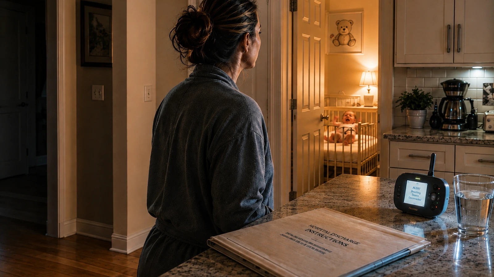

Featured This Week
Stories Worth Reading

🤍 Latest · Essay
The Transition Nobody Counts Twice
They became parents so quickly they never really got to be newlyweds. A research-driven narrative essay on what happens when marriage and motherhood collide before either has time to settle.
Read Full Story →
First-Time Parenting
Prepared for What?
Hospital discharge teaching tests whether a parent can repeat instructions back — not whether she can respond when reality looks different.
Read More →
Fiction
The Fourth Check
A story about the specific kind of memory failure that hits every sleep-deprived parent at 3 a.m. — and the real psychology behind it.
Read More →
First-Time Parenting
The Morning Nothing Went Wrong
Why the best-run households are also the most invisible ones — and what that costs the person running them.
Read More →
Fiction
The Baby That Wasn't His
A story of love and betrayal — what happens when the truth arrives after the wedding, not before it.
Read More →


💬 Leave a Comment
Sign in with GitHub to comment. Your voice matters in this community.